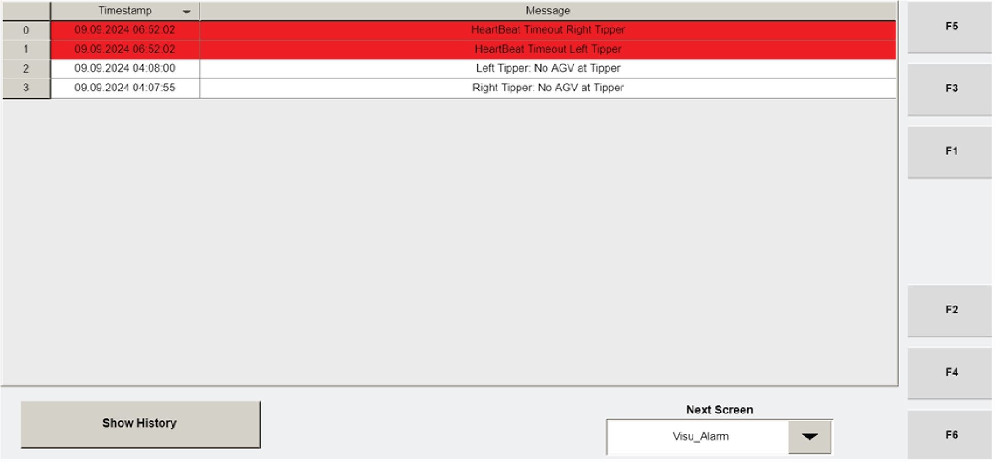

| Procedure ID | proc_review_tipper_alarm_history_visu_alarm_v1 |
|---|---|
| Title | Review Tipper Alarm History on Operator Station HMI (Visu_Alarm) |
| Procedure Type | diagnostic |
| Primary Role | operator |
| Support Safe | Yes |
| Capability Tags | None |
| Access Surface | tipper_hmi |
| Audience Roles | operator |
| Failure Pattern Tags | None |
| Validation Status | needs_sme_review |
| Merge Status | source_finalized |
Use the Operator Station HMI Visu_Alarm screen to view the list of tipper alarms with timestamps, then press SHOW HISTORY to load the last 1500 alarm records for live troubleshooting of tipper faults.
When you need to review tipper alarm entries and their timestamps on the Operator Station HMI, including accessing the last 1500 alarm records via SHOW HISTORY to support investigation of a tipper fault.

Responsible role: operator
Instruction:
On the Operator Station HMI, open the screen named "Visu_Alarm".
Expected result:
The Visu_Alarm screen is displayed and ready to show the tipper alarm list.
Responsible role: operator
Instruction:
On the Visu_Alarm screen, verify the list of tipper alarms is displayed and that each alarm entry includes a timestamp.
Expected result:
A list of tipper alarms is visible, and each entry includes a timestamp.
Responsible role: operator
Instruction:
On the Visu_Alarm screen, click the "SHOW HISTORY" button.
Expected result:
The screen switches/updates to show the alarm history view.
Stop or Escalate If:
Responsible role: operator
Instruction:
In the history view, confirm the list expands to include historical entries up to the last 1500 alarm records.
Expected result:
The history view shows up to the last 1500 alarm records.
Responsible role: operator
Instruction:
Stop on the relevant alarm entry/entries for the tipper fault you are investigating and record the alarm identity exactly as displayed on the list and the associated timestamp.
Expected result:
You have recorded the alarm identity/identity(ies) and their associated timestamps from the Visu_Alarm history list.